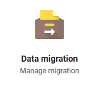
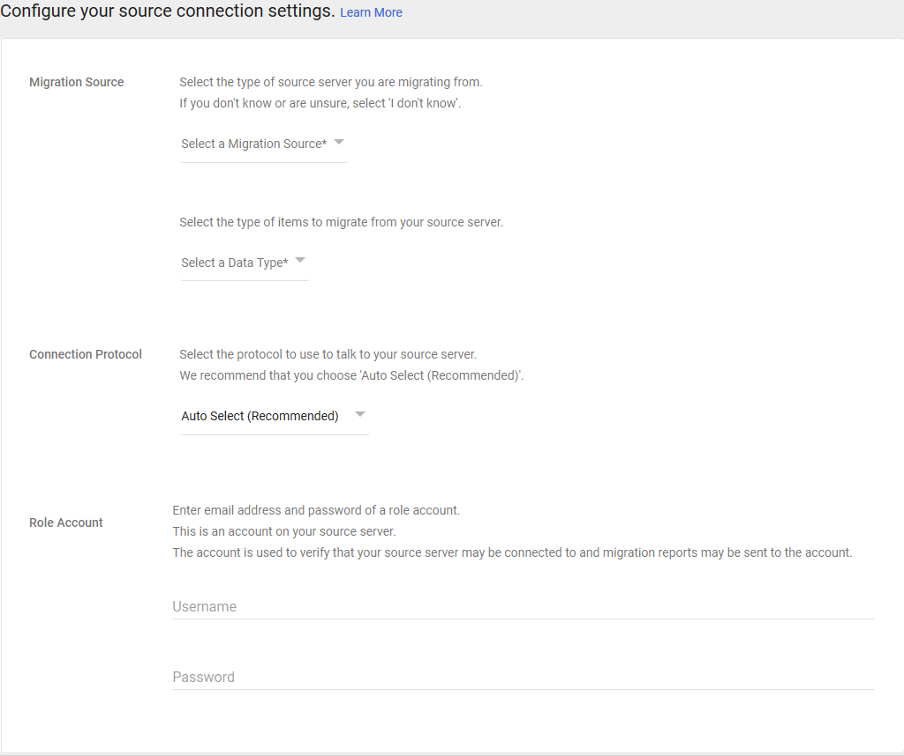

Como migrar de cPanel a Google Suite
En este tutorial vamos a ver como poder migrar los correos de cPanel a Google Suite, respaldando todos los correos y configurando la DNS (MX records en especifico) para poder funcionar.
Requerimientos
- Usuario y Contraseña del que compró el hosting.
- Usuario y contraseña de cada correo del cPanel antiguo.
- Contraseña de cPanel.
- Tener certificado SSL en el servidor IMAP.
1. Generar un respaldo de la informacion con Data Migration Service de G Suite.
Para poder generar el respaldo de la informacion (asumiendo que esta con certificado de SSL), tenemos que acceder al Data Migration Service de Google. 
Vamos a ver un menú de esta manera
